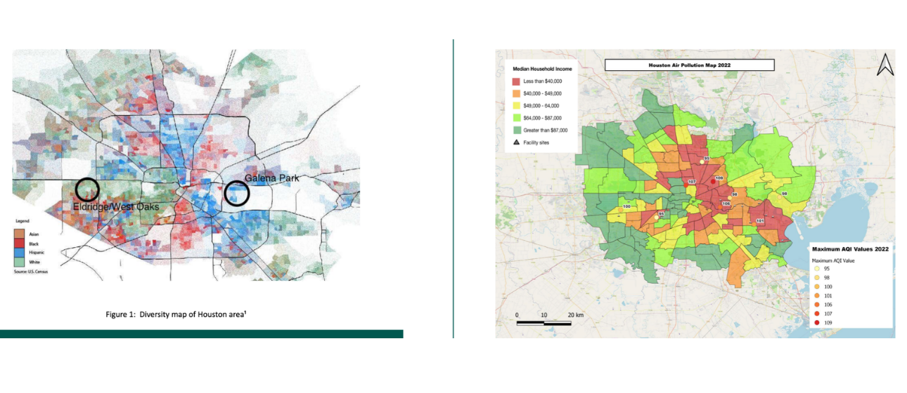

Houston, Texas has consistently ranked as one of the nation's most polluted cities, with many of its industrial facilities placed directly alongside poor, working-class communities. This study investigates those disparities by examining air quality conditions in two contrasting Houston neighborhoods: Galena Park (median household income ~$50,000) and West Oaks/Eldridge (median household income ~$82,509). The objective was to highlight the distribution of potentially harmful industrial waste facilities and visualize resulting air quality differences using both ground sensor data and satellite imagery.
Two distinct GIS and remote sensing methods were used in tandem — ArcGIS Pro for ground-level AQI sensor mapping, and ENVI for satellite-based land surface temperature analysis — to build a comprehensive picture of environmental inequity across these communities.
ArcGIS Pro (AQI Mapping): EPA daily air quality data for Houston (2022) was combined with a zip code shapefile. Nine AQI monitoring stations across Greater Houston recorded yearly maximum values, which were classified by median household income level and mapped with ArcGIS Pro to visualize spatial patterns in pollution exposure.
ENVI (Remote Sensing / Heat Map): A Landsat 8 OLI/TIRS image of Houston from September 2022 was processed in ENVI to produce a land surface temperature (LST) heat map. The workflow included displaying the Thermal Infrared Band (10.9–12.0 µm), creating a region of interest (ROI) over Greater Houston, performing radiometric calibration, applying thermal atmospheric correction, calculating emissivity via emissivity normalization, and converting the final output from Kelvin to Celsius.
This study confirms that underserved, lower-income communities like Galena Park bear a disproportionate share of Houston's air pollution burden. However, the findings also reveal that Houston's air quality crisis is a citywide problem that transcends class boundaries — with all monitored areas recording AQI levels well above EPA standards. Further research using change detection methods is needed to track how air quality has evolved over time and how communities are affected health-wise by sustained pollution exposure.